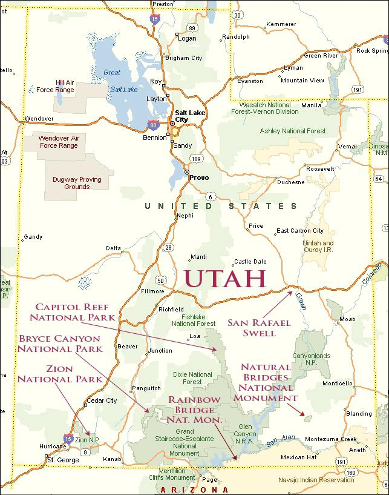

This map shows the national parks' locations in Utah.
Please click on the national park you are intertested in to go to its website.
There are six national parks in the map as follows:
- Zion National Park
- Bryce Canyon National Park
- National Bridges National Monument
- San Rafael Swell
- Rainbow Bridge National Moneument
- Great Salt Lake National Park
